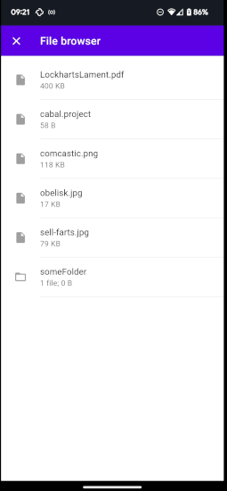

Android app in Haskell, six months, no previous Android experience
What did you do?
We built an open source Android app for Private Storage, with Haskell, in six months.

Why?
When I joined in October 2022, PrivateStorage had an existing grant deadline to ship an Android app by the end of July 2023. This seemed like the most important thing to do, so we did. We also improved the underlying layers of the tech stack in the process.
Who?
I work for PrivateStorage, a secure file sharing system on top of Tahoe-LAFS.
Success?
YES! As of <2023-07-25> the app is submitted but not yet through the Google Play Store review process.
When released, the app will be available on the Google Play store
Who worked on this?
- Shae Erisson, me
- Jean-Paul Calderone who knows much nix, Python, and now Haskell!
- Florian Sesser did css wizardry, I learned much about material.
- Meejah worked on magic wormhole pieces and picked up Haskell as we went.
Useful strategies?
- We almost always paired, so we all knew the state of the codebase and where we were heading.
- When we didn’t understand a thing, we would write a small standalone prototype for that one feature or library to teach ourselves how that worked.
- We paid Obsidian Systems for one hour a week to help where we got stuck.
- We used nix for cross compilation and build automation.
- We spent several hours a week explicitly teaching each other what we knew. I really want to put this first in the list, as the culture of being open and teaching was a massive benefit. We had one hour a week where Jean-Paul taught nix, one hour a week where I taught beginning Haskell, another hour where I taught advanced Haskell (things I was learning that might help). We also had two hours a week of explicit scheduled pairing where we all got together and worked on the stickiest problem along the path to shipping.
Most software dev jobs I’ve had want me to “do the thing” while spending zero time teaching or training others. I wanted to take the opposite approach and this paid off far more than my already wild hopes.
What tech did you use to get Haskell running on Android?
We used reflex-frp, meaning the app was a webview component that worked on Android and also on localhost.
First we learned about functional reactive programming, then specifically reflex-frp, then we got a one hour a week contract with Obsidian Systems ( creators of reflex-frp ) where we could ask questions when stuck.
Why didn’t you use Kotlin, Java, or port the Python codebase to Android?
PrivateStorage is a thin layer on top of gridsync, which is a layer on top of Tahoe-LAFS, and it’s almost entirely written in Python.
One of these ingredients, zfec, is a forward error correction layer that splits your saved file into five pieces, allowing you to recover the data from any three of those pieces. Tahoe’s ZFEC is a 17 year old C file that compiles to a shared object that dynamically loads into our application. Jean-Paul figured out the magic to cross compile this shared object to Android. :tada:
I spent eight weeks failing to load the shared object into a Python on Android.
When we hit the point where we could not find anyone who would take our money to show us how to do it, I tried Haskell.
I was able to load the shared object into ghci on termux in two days. So we tried building an Android app in Haskell.
Here’s demo code for using Haskell’s foreign function interface from inside GHCi:
-- this works great in ghci:
foreign import ccall "math.h sin" c_sin :: Double -> Double
c_sin 1.0Once the simple demo code above worked, I wrote this code to call into our cross-compiled shared object:
{-# LANGUAGE ForeignFunctionInterface #-}
import Foreign.C.String
import Foreign.Ptr
data C_Token
foreign import ccall "lib.h token_random" tokenRandom :: IO (Ptr C_Token)
foreign import ccall "lib.h token_encode_base64" tokenEncodeBase64 :: (Ptr C_Token) -> IO CString
do tr <- tokenRandom
btr <- tokenEncodeBase64 tr
res <- peekCAString btr
print resThis was more work than it seems, I had to install the latest version of termux from the F-Droid store due to changes in Android permissions.
I don’t remember where I got a version of GHC built for termux, but if you want to know, I can check my notes.
No really, why not Java or Kotlin?
Jean-Paul and I had previous Java experience, but didn’t really want to write it in Java if possible.
Why Haskell?
My previous job was Haskell, Jean-Paul wanted to use Haskell in anger.
In my experience, Haskell is more fun to write than Java or Kotlin.
Random useful bits
Using scrcpy to interact with my phone from my desktop was good for pairing, team demos, and the screenshots in this blog post.